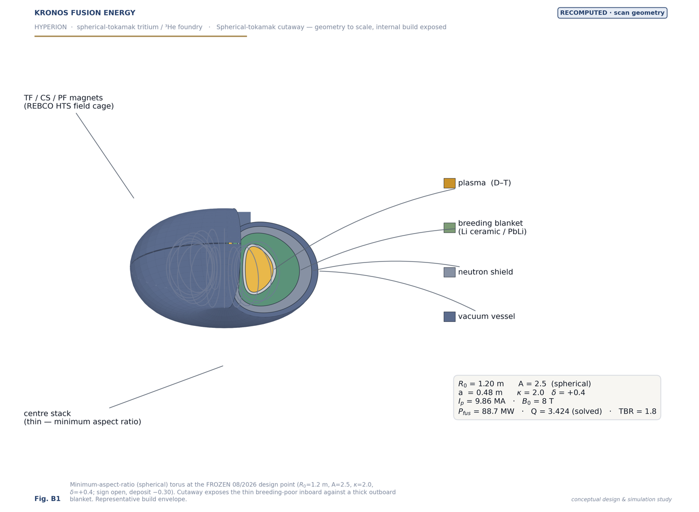
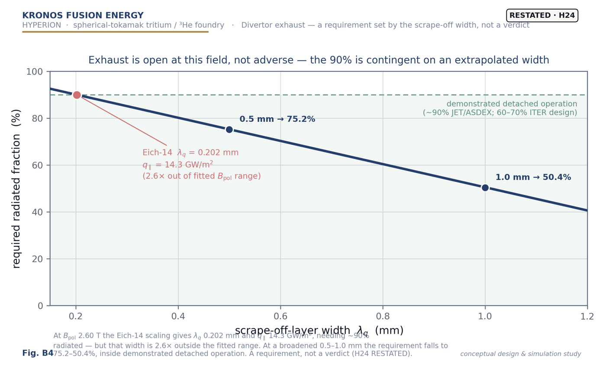

Breeder · D–T · config 22021
The Breeder.
This is the deposited D–T breeder evaluator (dt_evaluator.evaluate()
on kronos_clean kernels — pure NumPy, no economics),
running the frozen HYPERION point: R₀ 1.2 m, A 2.5, B₀ 8 T, Ti0 15 keV, TBR 1.8. HYPERION's bar is
fusion gain only — it makes tritium, helium-3 and 14 MeV neutrons, not electricity. Move the knobs; gain,
power, current, neutron fraction and net tritium recompute from the power balance, live. Q 3.424 is solved,
not scaled.
HYPERION · spherical-tokamak breeder
The spherical-torus geometry — A 2.5 · R₀ 1.2 m · negative-triangularity D–T plasma on a thin centre stack. The sliders below drive its physics, live.
starting …
Gain Q
—
Pfus/Paux · solved
Plasma current
—
MA (driven —)
Neutron fraction
—
% of Pfus
Peak coil field
—
T · demo ≤ 20.1
Power balance · live — Pfus = charged + neutron
charged Pchg (stays in the plasma)
neutron Pn — the 14 MeV product the blanket breeds on
Operating window · where HYPERION is on duty and closes (live)
closes (on-duty + βN & coil OK)
on duty only
outside the window
your operating point
Recomputed by the deposited engine when you change field, aspect ratio, TBR or fuel — the marker tracks your temperature and density.
Figures from the deposit — click to enlarge

Spherical-tokamak cutaway

Exhaust / radiated fraction
Environment & safety (Mode D2) — engineering that follows the closed physics
The hard part — a solved power balance at demonstrated confinement — is done and reproduced. What remains is engineering and procurement with known solutions, not physics unknowns:
Public dose · CLOSES
DF 1–34
required detritiation factor vs ITER-class 1,000–10,000 demonstrated — a design task with an off-the-shelf solution
Waste class
≤ Class C
at a certified low-activation RAFM heat (Nb < 10 ppm) — a steel procurement spec, routinely certified
Burner scheduled waste
≈ zero
0.035–0.144 first-wall changes in 30 years (low-neutron D–³He, wall life 104–428 fpy)
Low-neutron fleet
41× / 168×
burner wall-loading below the breeder — Aegis 41×, MetroVolt 168×; cleaner as ³He rises
Same frozen physics (Q 3.424, 88.7 MW). These are design requirements shown with their conditions — achievable with known solutions, not yet demonstrated hardware. Remote federal siting and tritium containment are designed in from the outset. Open: the Ag-108m waste residual (needs a certified-heat assay + regulatory determination) and the absolute activated-inventory run. No cost figures are shown here.
Read the badges honestly
HYPERION is
sized to the requirement, not to a physics optimum: the duty badge trips when net tritium leaves
the 1.87–4.0 kg/yr band, and the closure badge needs on-duty
and β
N below the NSTX no-wall 4.2
and peak coil field within the demonstrated 20.1 T. Availability is damage-life-limited and the triangularity
sign is a declared caveat — both are stated open problems, not hidden. Source:
the breeder deposit.